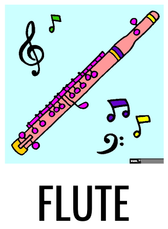

FLUTE
Figurative Language Understanding through Textual ExplanationsTuhin Chakrabarty, Arkadiy Saakyan, Debanjan Ghosh, Smaranda Muresan


FLUTE contains 9,000 high-quality literal, figurative sentence pairs with entail/contradict labels and the associated explanations. The benchmark spans four types of figurative language: Sarcasm, Simile, Metaphor, and Idiom.
A noteworthy property of FLUTE is that both the entailment/contradiction labels and the explanations are w.r.t the figurative language expression (i.e., metaphor, simile, idiom) rather than other parts of the sentence.
FLUTE is challenging because it inherently requires 1) relational reasoning using background commonsense knowledge, and 2) finegrained understanding of figurative language. Our dataset is constructed through a combination of few-shot prompting with GPT3 and crowd-sourcing from AMT followed by experts judging and minimally editing GPT-3 output to ensure quality control.
Links:
[Preliminary Draft]
[Leaderboard]
[Data Explorer]
[Github]
[Primary Contact]
@article{chakrabarty2022flute,
title={FLUTE: Figurative Language Understanding and Textual Explanations},
author={Chakrabarty, Tuhin and Saakyan, Arkadiy and Ghosh, Debanjan and Muresan, Smaranda},
journal={arXiv preprint arXiv:2205.12404},
year={2022}
}